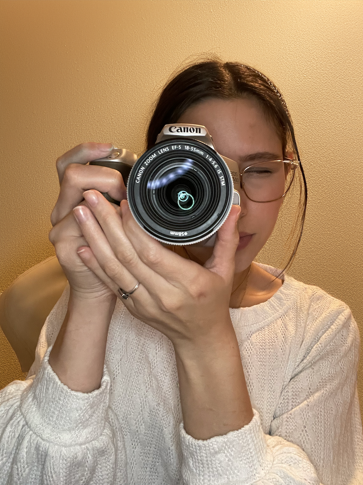
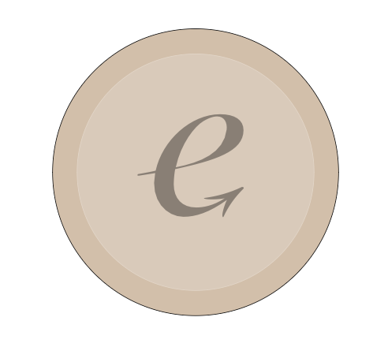
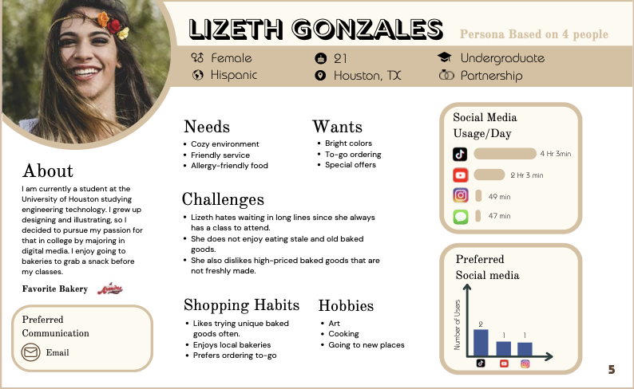
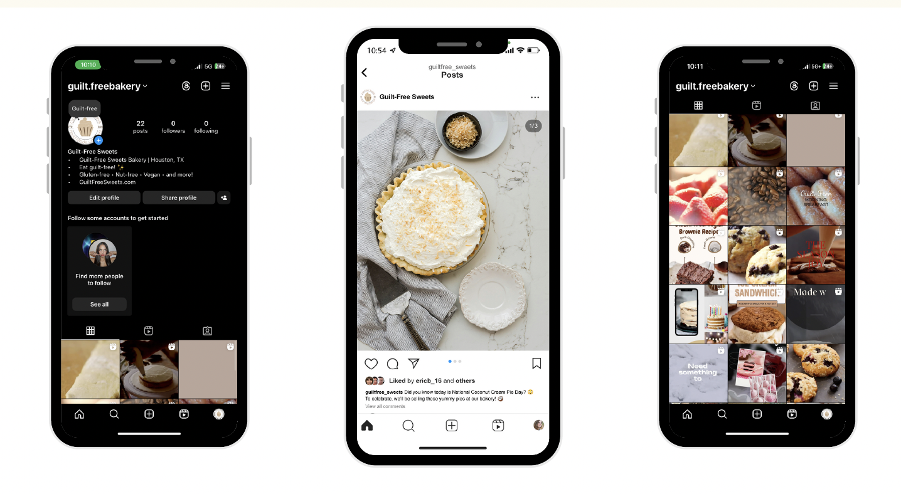
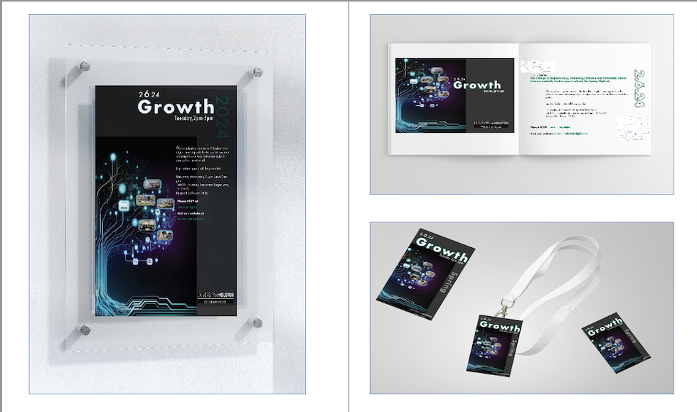

My name is Elizabeth Villegas, and I am currently a student at the University of Houston, pursuing a degree in Digital Media. I am interested in a career that intersects marketing and real estate. I pride myself on being highly organized and communicative, which allows me to thrive in both collaborative and independent work environments. In my free time, I enjoy spending quality moments with family and friends and creating innovative digital artwork.
Download ResumeDigital media equips me with a diverse set of skills, including photography, videography, proficiency in Graphic Design, and expertise in virtual and augmented reality. Additionally, I have a strong understanding of analytics and digital marketing, which enables me to create compelling content and strategically engage audiences across various platforms!
My graphic design skills include expertise in creating visually engaging designs using Adobe Creative Suite, including Photoshop, Illustrator, and InDesign. I excel at translating concepts into compelling visuals, whether for branding, marketing materials, or digital content
I have developed strong marketing skills, including content creation, social media strategy, and audience engagement. Proficient in analytics tools, I optimize campaigns to enhance communication, performance, and brand growth across digital platforms.
I possess strong photography skills, with expertise in capturing high-quality images for various purposes, including portrait, event, and product photography. I excel in composition, lighting techniques, and post-processing to deliver visually compelling results.
I have strong videography skills, specializing in capturing high-quality footage for events, promotional content, and storytelling. Skilled in camera operation, lighting, sound, and post-production editing, I create engaging videos that effectively convey messages.
As a digital media student, I work on a wide range of graphic design projects, including business cards, brochures, flyers, and logos. To showcase my skills and create a personal identity, I designed my own self-branded logo using Adobe InDesign. This logo serves as a visual representation of my style and creativity, reflecting my expertise in graphic design while also establishing a strong personal brand in the digital media field.

In addition to my design work, I conduct research to explore the marketing logistics, such as creating buyer personas. This helps identify the ideal target audience for a business, ensuring the brand is tailored to the right clients. By understanding their needs and preferences, I can focus branding efforts on reaching the right people and effectively conveying the brand's message.

One of the highlights of my internship was having the opportunity to take photos for the company’s social media. I visited a newly purchased garden and captured images that showcased the space, which were then shared online to help promote the brand and engage with our audience. It was a great chance to apply my photography skills while contributing to the company’s digital presence.
I worked on a branding project for a company I created called Guilt-Free Sweets, where I had the chance to showcase my videography skills. I produced short-form videos designed for social media reels, highlighting the brand’s products and message. This project allowed me to blend creativity and marketing, creating engaging content to promote the business online.

For one of my projects, I managed the entire branding for UH Digifest, which I rebranded as "Growth" to better reflect the theme of students transitioning into adulthood and pursuing their dream careers. This included designing a brochure, posters, and badges to promote the event. My goal was to create a cohesive visual identity that resonated with the message of personal and professional growth, while also generating excitement and engagement for the event.
